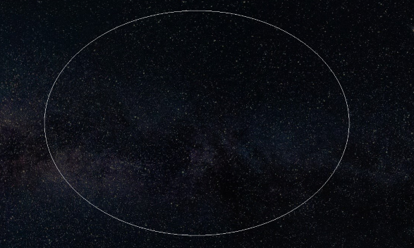
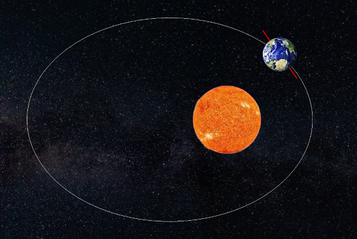
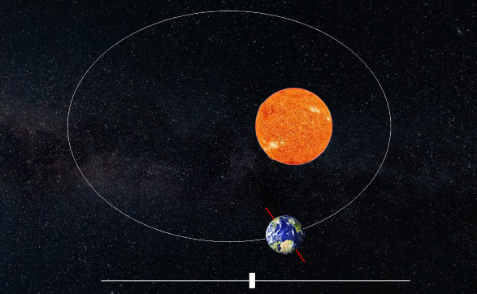
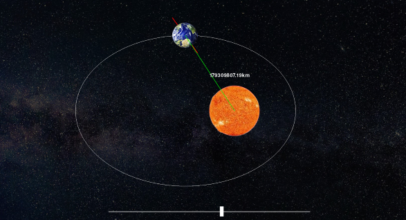
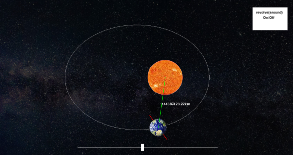

사용한 모듈: pygame, math
코드: (Code Link)
지구 과학 시간에 자유 주제 탐구 과제로 제출한 프로그램이다.
① 우선 태양 주위의 공전궤도를 만들었다. 이심률이 변화하도록 해야하기 때문에 타원형으로 그리게 된다.

② 지구가 공전 궤도를 공전해야 하므로 앞서 그린 타원의 가로, 세로를 구해 장축, 단축을 구하고 타원의 방정식을 구하도록 한다. 그러면 x값에 따라 지구의 y값이 구해져 공전을 구현할 수 있게된다.

③슬라이드바를 구현하여 이심률 변수의 값을 조절할 수 있도록 한다.

④ 태양과 지구 사이의 거리를 구하고, 지구와 태양 사이에 선을 그린 후 선 중앙 좌표를 구해서 그 좌표에 지구과 태양 사이의 거리를 계산한다. (이때 1픽셀 당 500,000km로 지정했다.)

⑤자전축을 나타내는 선을 그리고 공전을 진행하거나 멈추게 하는 버튼을 만든다.
